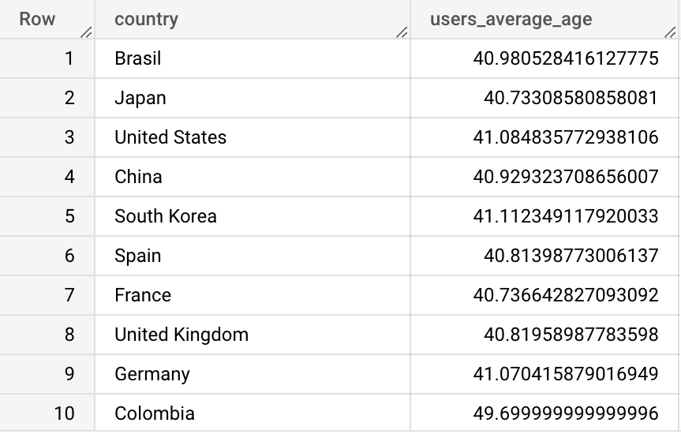
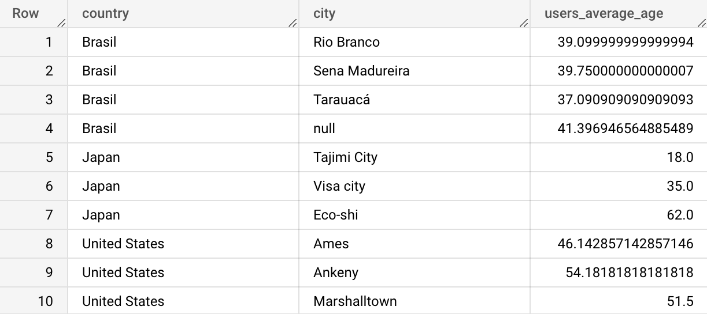
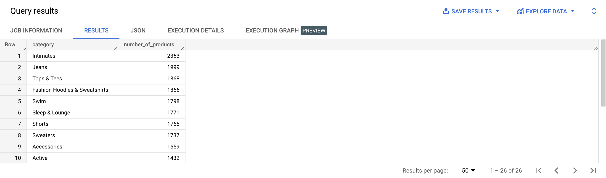
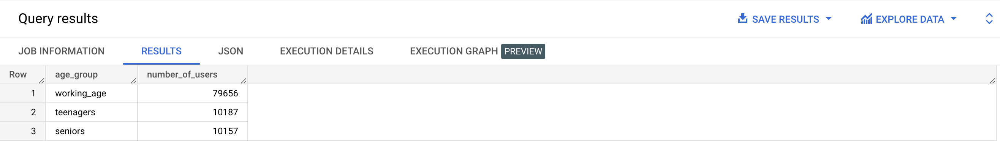
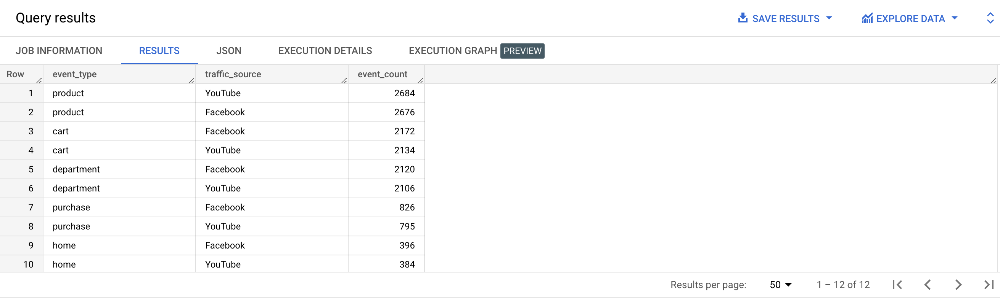
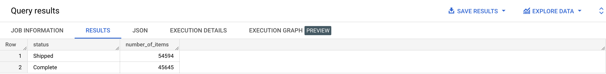
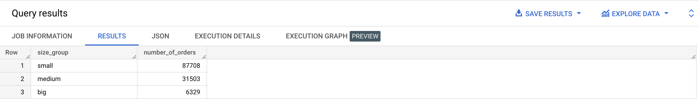

Key things to know:
- The GROUP BY clause allows to break down aggregation metrics by specific dimensions.
- An aggregation metric is a number calculated using one of the aggregation functions we saw earlier (COUNT, SUM, MAX, MIN, AVG etc.). A dimension is usually a column with a non-numerical value, for example job, gender, city, age, date etc.
- When you hear GROUP BY, you can think break down by.
Example 1
SELECT country,
AVG(age) AS users_average_age
FROM bigquery-public-data.thelook_ecommerce.users
GROUP BY country;

Example 2
SELECT country,
city,
AVG(age) AS users_average_age
FROM bigquery-public-data.thelook_ecommerce.users
GROUP BY country, city;

SQL order of operations
{% include practice_problems_intructions.html %}
N°1 — Number of products by category
Tables
bigquery-public-data.thelook_ecommerce.products
Task
Write a query that will display the number of products by category, sorted by number of products in descending order.
Example results

Solution
🙈 Hide👀 Show
SELECT category,
COUNT(*) AS number_of_products
FROM bigquery-public-data.thelook_ecommerce.products
GROUP BY category
ORDER BY number_of_products DESC;
N°2 — Number of users by age group
Tables
bigquery-public-data.thelook_ecommerce.users
Task
Write a query that will:
- display the number of users by age group
- sorted by number of users in descending order
Here is how you should define age groups:
- From 12 years old to 17 years old: teenager
- From 18 years old to 64 years old: working_age
- 65 years old and over: senior
Example results

Solution
🙈 Hide👀 Show
SELECT CASE
WHEN age BETWEEN 12 AND 17 THEN 'teenagers'
WHEN age BETWEEN 16 AND 64 THEN 'working_age'
WHEN age >= 65 THEN 'seniors'
END AS age_group,
COUNT(*) AS number_of_users
FROM bigquery-public-data.thelook_ecommerce.users
GROUP BY age_group
ORDER BY number_of_users DESC;
N°3 — Biggest age group in Brasil
Tables
bigquery-public-data.thelook_ecommerce.users
Task
Write a query that will display the biggest age group in Brasil, as well as the number of corresponding users. Here is how you should define age groups:
- From 12 years old to 17 years old: teenager
- From 18 years old to 64 years old: working_age
- 65 years old and over: senior
Example results
Solution
🙈 Hide👀 Show
SELECT CASE
WHEN age BETWEEN 12 AND 17 THEN 'teenagers'
WHEN age BETWEEN 16
AND 64 THEN 'working_age' WHEN age >= 65 THEN 'seniors'
END AS age_group,
COUNT(*) AS number_of_users
FROM bigquery-public-data.thelook_ecommerce.users
WHERE country = 'Brasil'
GROUP BY age_group
LIMIT 1;
N°4 — Number of events from Facebook and YouTube in July 2022 broken down by event type and traffic source
Tables
bigquery-public-data.thelook_ecommerce.events
Task
Write a query that will:
- display the number of events from Facebook and YouTube in July 2022
- broken down by event_type and traffic_source
- sorted by event count in descending order
Example results

Solution
🙈 Hide👀 Show
SELECT event_type,
traffic_source,
COUNT(*) AS event_count
FROM bigquery-public-data.thelook_ecommerce.events
WHERE (created_at BETWEEN '2022-07-01 00:00:00 UTC' AND '2022-07-31 23:59:59 UTC')
AND traffic_source IN ('YouTube', 'Facebook')
GROUP BY event_type,
traffic_source
ORDER BY event_count DESC;
N°5 — Top two order status by number of items
Tables
bigquery-public-data.thelook_ecommerce.orders
Task
Write a query that will display the top two order status by number of items, sorted by number of items in descending order.
Example results

Solution
🙈 Hide👀 Show
SELECT status,
SUM(num_of_item) AS number_of_items
FROM bigquery-public-data.thelook_ecommerce.orders
GROUP BY status
ORDER BY number_of_items DESC
LIMIT 2;
N°6 — Number of orders by size group
Tables
bigquery-public-data.thelook_ecommerce.orders
Task
Write a query that will:
- display the number of orders broken down by size group
- sorted by number of orders in descending order
Size groups are defined this way:
- If number of order items is 1 then small
- If number of order items is 2 or 3 then medium
- If number of order items is 4 or more then big
Example results

Solution
🙈 Hide👀 Show
SELECT CASE
WHEN num_of_item = 1 THEN 'small'
WHEN num_of_item IN (2,3) THEN 'medium'
WHEN num_of_item >= 4 THEN 'big'
END AS size_group,
COUNT(*) AS number_of_orders
FROM bigquery-public-data.thelook_ecommerce.orders
GROUP BY size_group
ORDER BY number_of_orders DESC;
N°7 — Country with the smallest number of users
Tables
bigquery-public-data.thelook_ecommerce.users
Task
- Write a query that will display the country with the smallest number of users.
- Deutschland should be counted as Germany
- España should be counted as Spain
Example results
Solution
🙈 Hide👀 Show
SELECT CASE
WHEN country = 'Deutschland' THEN 'Germany'
WHEN country = 'España' THEN 'Spain'
ELSE country
END
AS country_name,
COUNT(*) AS number_of_users
FROM bigquery-public-data.thelook_ecommerce.users
GROUP BY country_name
ORDER BY number_of_users ASC
LIMIT 1;
N°8 — Number of home events in the state of New York in the first quarter of 2022 broken down by traffic source and browser
Tables
bigquery-public-data.thelook_ecommerce.events
Task
Write a query that will:
- display the number of home events in the state of New York in the first quarter of 2022
- broken down by traffic source and browser
- sorted by number of events in descending order
Example results

Solution
🙈 Hide👀 Show
SELECT traffic_source,
browser,
COUNT(*) AS number_of_events
FROM bigquery-public-data.thelook_ecommerce.events
WHERE (created_at BETWEEN '2022-01-01 00:00:00 UTC' AND '2022-03-31 23:59:59 UTC')
AND state = 'New York'
GROUP BY traffic_source,
browser
ORDER BY number_of_events DESC;